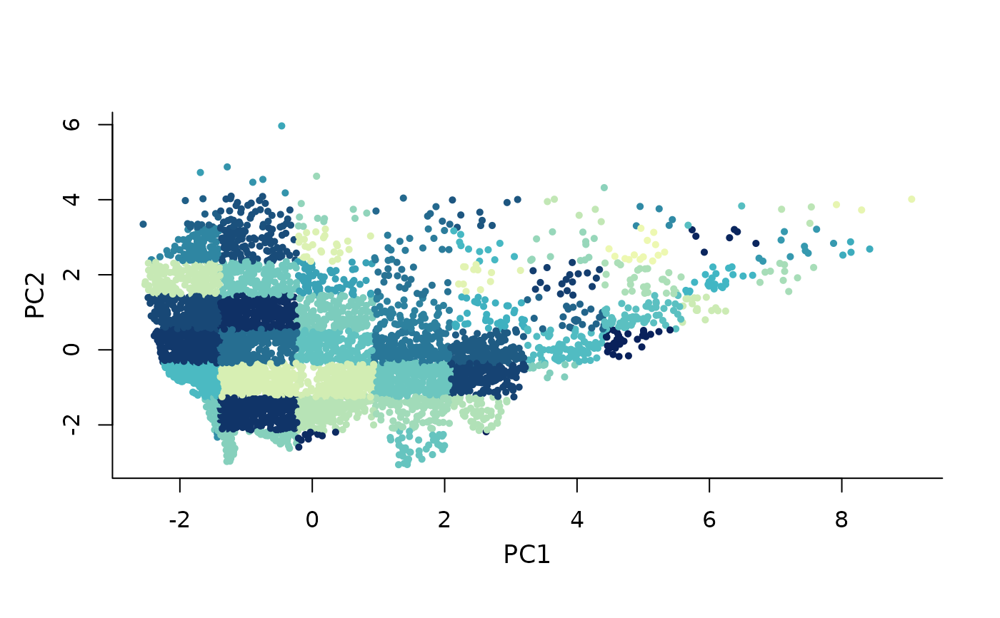
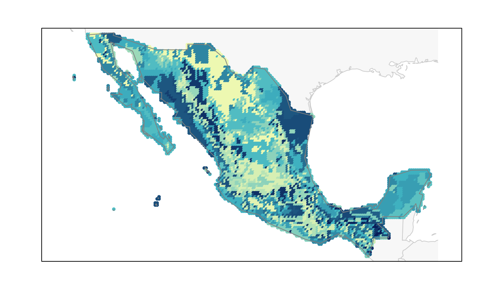
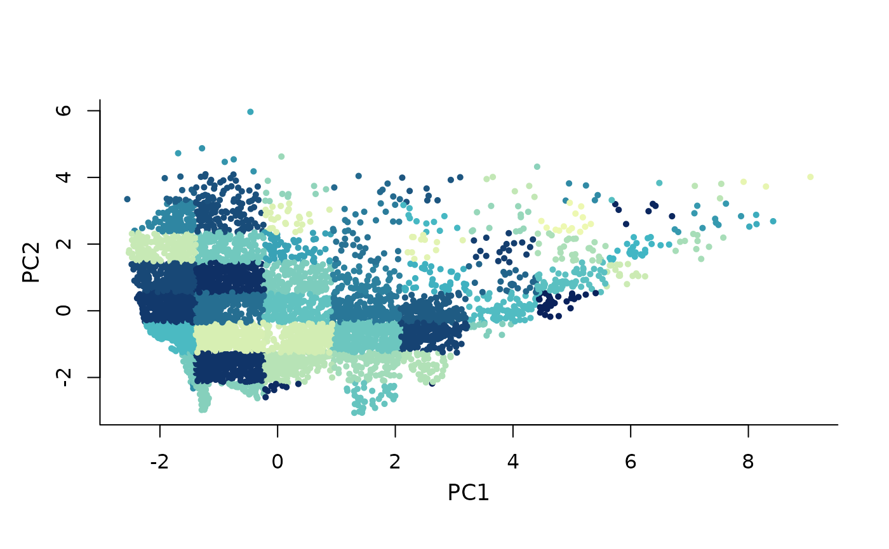
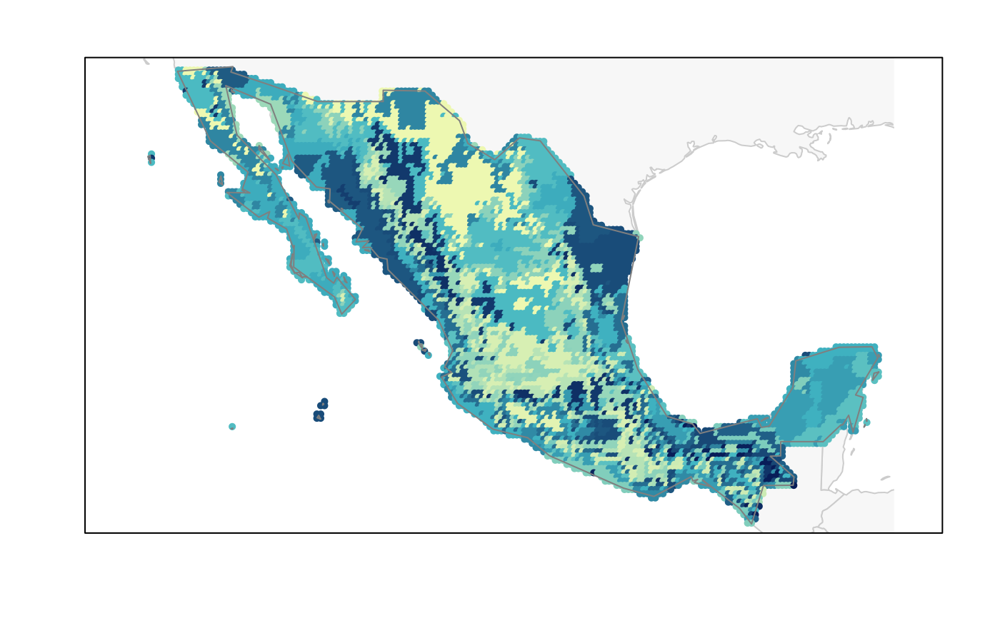

Representation of environmental blocks in geography and environment
Source:R/plot_blocks_EG.R
plot_blocks_EG.RdCreates a plot representing environmental blocks (all or selected) in both spaces, environmental and/or geographic.
Usage
plot_blocks_EG(master, region_border = TRUE, mask_border = FALSE,
which = "all", block_ID = FALSE, col_all = NULL,
col_selected = NULL, col_ID = NULL, cex_all = 0.7,
cex_selected = 1, cex_ID = 1, pch_all = 16,
pch_selected = 16, add_main = TRUE, mar = NULL)
plot_blocks_E(master, which = "all", block_ID = FALSE, col_all = NULL,
col_selected = NULL, col_ID = NULL, cex_all = 0.7,
cex_selected = 1, cex_ID = 1, pch_all = 16,
pch_selected = 16, main = "", xlab = NULL, ylab = NULL)
plot_blocks_G(master, region_border = TRUE, mask_border = FALSE,
which = "all", block_ID = FALSE, col_all = NULL,
col_selected = NULL, col_ID = NULL, cex_all = 0.7,
cex_selected = 1, cex_ID = 1, pch_all = 16,
pch_selected = 16, mar = NULL)Arguments
- master
master_matrix object derived from function
prepare_master_matrixor master_selection object derived from functionsuniformG_selection,uniformE_selectionorEG_selection. Blocks must be defined, seemake_blocks.- region_border
(logical) whether to add region border to the plot. Default = TRUE.
- mask_border
(logical) whether to add mask border to the plot. Ignored if mask is not present in
master_selection. Default = FALSE.- which
(character) blocks to be plotted. Options are "all" or "selected". Default = "all".
- block_ID
(logical) whether to add a text ID to blocks plotted in environmental space. Default = FALSE.
- col_all
colors for points in all blocks. The default, NULL, uses a color blind friendly palette to differentiate among distinct blocks when
which= "all", or uses a light gray color whenwhich= "selected". See details for explanations of how to define them.- col_selected
color for points in selected blocks. Ignored if
which= "all". The default, NULL, uses a blue color to represent selected blocks on top of all.- col_ID
color for text ID to be added if
block_ID= TRUE. The default, NULL, uses the "back".- cex_all
(numeric) value defining magnification of points in all blocks relative to the default. Default = 0.7.
- cex_selected
(numeric) value defining magnification of points in selected blocks relative to the default. Default = 1.
- cex_ID
(numeric) value defining magnification of text ID to be added if
block_ID= TRUE. Default = 1.- pch_all
(numeric) integer specifying a symbol when plotting points of all blocks. Default = 16.
- pch_selected
(numeric) integer specifying a symbol when plotting points of selected blocks. Default = 16.
- add_main
(logical) whether or not to add fixed titles to the plot. Default = TRUE. Titles added are "Environmental space" and "Geographic space".
- mar
(numeric) vector of length 4 to set the margins of the plot in G. The default, NULL, is (3.1, 3.1, 2.1, 2.1) for
plot_blocks_Gand (3.5, 0.5, 0.5, 0.5) forplot_blocks_EG.- main
(character) the main title for the plot.
- xlab
(character) label for the x axis. The default, NULL, uses variable_1.
- ylab
(character) label for the y axis. The default, NULL, uses variable_2.
Value
A plot showing all the blocks of the region of interest and, if asked, the blocks that were selected. They are show in both spaces, geographic and/or environmental.
Details
Defining colors in col_all depends on what is chosen in which.
If "all" is chosen, it is convenient to define col_all as a color
ramp palette (randomly arranged) or a set of colors depending on the number
of blocks in the object defined in master. If "selected" is chosen
in which it is recommended to use a single color, preferably a light
one, so the selected blocks can be easily identified. See examples.
Examples
# Data
m_matrix <- read_master(system.file("extdata/m_matrix.rds",
package = "biosurvey"))
# Creating blocks
m_blocks <- make_blocks(m_matrix, variable_1 = "PC1",
variable_2 = "PC2", n_cols = 10, n_rows = 10,
block_type = "equal_area")
plot_blocks_EG(master = m_blocks, block_ID = TRUE)
 plot_blocks_E(master = m_blocks)

plot_blocks_G(master = m_blocks)

# Defining your own colors
n_blocks <- length(m_blocks$data_matrix$Block)
your_palette <- sample(heat.colors(n_blocks), n_blocks)
block_factor <- as.factor(m_blocks$data_matrix$Block)
your_colors <- your_palette[block_factor]
plot_blocks_EG(master = m_blocks, block_ID = TRUE, col_all = your_colors)
plot_blocks_E(master = m_blocks)

plot_blocks_G(master = m_blocks)

# Defining your own colors
n_blocks <- length(m_blocks$data_matrix$Block)
your_palette <- sample(heat.colors(n_blocks), n_blocks)
block_factor <- as.factor(m_blocks$data_matrix$Block)
your_colors <- your_palette[block_factor]
plot_blocks_EG(master = m_blocks, block_ID = TRUE, col_all = your_colors)